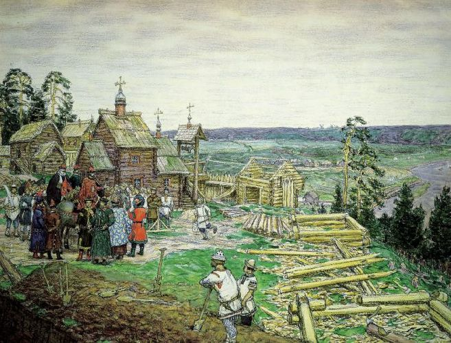
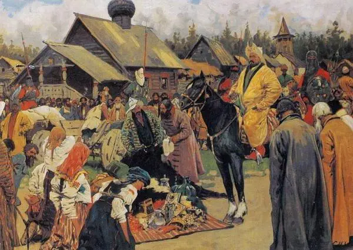

При распаде Киевской Руси образовалось около 10 самостоятельных княжеств, в дальнейшем они продолжали дробиться и их количество увеличивалось. Крупнейшими русскими княжествами являлись: Владимиро-Суздальское, Галицко-Волынское, Киевское, Переяславское, Полоцкое, Рязанское, Смоленское, Турово-Пинское, Черниговское и Новгородская феодальная республика.
Наиболее сильными из них являлись: Владимиро-Суздальское, Галицко-Волынское, Смоленское и Черниговское княжества, между которыми развернулось противостояние за киевский престол и доминирование в общерусских делах. Если смоленские и черниговские князья стремились занять киевское княжение лично, то владимиро-суздальские и волынские — через младших родственников или союзников. Киев продолжал считаться главным городом Руси, но стремительно терял своё значение. В ходе княжеских междоусобиц, в 1169 году Киев впервые был разгромлен суздальским князем Андреем Боголюбским. С этим событием ряд историков связывают окончательное падение роли Киева, как общерусской столицы, и «отделение старшинства от места». Впоследствии Киев был ещё раз разгромлен в 1203 году смоленским князем Рюриком Ростиславичем.
Во Владимиро-Суздальском княжестве после войны за наследство Андрея Боголюбского утвердилась сильная княжеская власть, опиравшаяся на новый служилый слой, прообраз дворянства. Именно Владимиро-Суздальское великое княжество стало ядром современного Российского государства. В период длительного правления Всеволода Большое Гнездо, Владимирское княжество достигло наивысшего расцвета и было сильнейшим княжеством Руси. Переяславское, Рязанское (с середины XIII века и Смоленское) княжества оказались в сфере влияния владимиро-суздальских князей.
В Новгороде, в отличие от других русских княжеств установился республиканский строй, при котором вече во главе с боярством назначало посадников, приглашало и изгоняло князей. Новгородская дипломатия позволяла использовать противоречия между ведущими княжескими группировками, занимать сторону одной из них и выходить из борьбы победителями, тем самым сохраняя новгородский политический уклад, хотя владимиро-суздальские князья имели возможность использовать зависимость Новгорода, не способного себя прокормить по причине сурового климата, от поставок зерна из суздальского Ополья. Новгород вёл активную торговлю и дипломатические сношения со странами Северо—Западной Европы, был членом Ганзейского союза европейских городов.
Галицко-Волынское княжество, включившее в себя земли Прикарпатья и Волыни, отличалось мощной земельной аристократией. В войне за восстановление единства княжества (1205—1245) галицкая земельная аристократия, а также венгерские и польские интервенты потерпели поражение, также были ликвидированы основные уделы на Волыни. В 1253 году галицкий князь Даниил Романович в целях противостояния монголам пошёл на союз с католическим Римом и принял титул «Король Руси». Время правления Даниила Романовича было периодом наибольшего экономического и политического усиления Юго-Западной Руси, однако в дальнейшем при его потомках Волынское княжество пришло в упадок и было поглощено Литвой и Польшей.
Междоусобная борьба сочеталась с половецкими набегами из причерноморских степей. Но если в середине XII века натиск был довольно велик, то после 1185 года половцы появлялись на Руси только в качестве союзников одной из противоборствующих княжеских группировок. Половецкая знать интенсивно христианизировалась, а в 1223 году обратилась за помощью к русским князьям против монголов (Битва на Калке).
В ходе монгольского нашествия русские войска потерпели ряд поражений, многие русские города подверглись разорению. В 1237—1238 годах монголы разгромили северо-восточные русские княжества. Соединённые силы Владимирского и Рязанского княжеств потерпели поражение в битве у Коломны. Владимирский князь Юрий II Всеволодович не смог противостоять монголам и был разбит в битве на реке Сити. В 1239—1240 годах монголы разгромили юго-западные русские земли, взяв Киев в 1240 году. Все русские земли оказались под верховной властью Монгольской империи, в подчинении её западного крыла — Улуса Джучи или Золотой Орды. Верховными арбитрами в спорах за княжения, в том числе за Киев, стали ордынские ханы. После монгольского нашествия начинает теряться связь между северо-восточными и юго-западными русскими княжествами, что впоследствии предопределило их различную историческую судьбу. На протяжении второй половины XIII века ордынцы провели ещё несколько вторжений с целью упрочить свой контроль над русскими княжествами и добиться выплаты дани, самым известным из которых стала так называемая «Дюденева рать» (1293).
В то же время на западном направлении новгородский князь Александр Ярославич Невский смог успешно отразить вторжения: шведов в 1240 году, немцев в 1242 году и литовцев в 1245 году. За свои победы князь получил прозвище Невский, а после смерти был причислен к лику святых.
В 1252 году Александр стал великим князем Владимирским и Киевским одновременно. Несмотря на противостояние западной экспансии, Александр пошёл на союз с Ордой, фактически утвердив зависимость русских княжеств от монголо-татар. В то же время после антиордынского восстания на Руси в 1262 году, когда во Владимире, Суздале, Ростове, Переяславле, Ярославле и других городах были перебиты татарские сборщики дани (баскаки), Александр смог убедить хана не посылать карательные отряды на Русь, а также не набирать в монгольскую армию жителей Руси. В 1263 году после смерти Александра Невского Владимирское великое княжество окончательно распадается на уделы.
Московское княжество было выделено из великого княжества Владимирского в 1263 году согласно завещанию великого князя владимирского Александра Невского его младшему сыну Даниилу Александровичу. Первоначально Московское княжество после своего образования в 1263 году включало только земли в среднем течении реки Москвы. Его столица Москва была единственным городом княжества.
После Даниила Александровича Московским княжеством правили его потомки. В 1328 году Москва одержала верх в борьбе с Тверью за великое княжение Владимирское. С 1363 года ярлык на великое княжение Владимирское принадлежал только московским князьям.
В середине XIII века Миндовг основал Великое княжество Литовское. К 1320-м годам Литва распространила свою власть на западнорусские земли. В 1362 году Литва разбила татар при Синих Водах и присоединила южную Русь.
В 1299 году после очередного разорения южной Руси ордынцами киевский митрополит переехал во Владимир (в 1354 году перенос кафедры был подтверждён Константинополем). Почти сразу после этого на юге возникла Галицкая митрополия, а затем Литовская, существовавшие впоследствии с перерывами. Киевский митрополит в 1325 году вторично поменял резиденцию, переехав в Москву. Впоследствии великие княжества Московское и Литовское стремились к тому, чтобы именно их претендент занимал общерусскую митрополию или как минимум был свой митрополит в те периоды, когда общерусская митрополия контролировалась «чужим» претендентом.
В период правления Дмитрия Донского (1359—1389) Московское княжество становится одним из главных центров объединения русских земель, а Владимирское великое княжество стало наследственной собственностью московских князей. Серия литовских походов против Московского княжества на рубеже 1360-х 1370-х оказалась безрезультатной, и Москва отстояла тем самым статус одного из центров объединения русских земель. В этот же период был построен белокаменный московский Кремль, раньше, чем в других княжествах начата чеканка серебряной монеты, впервые стало использоваться огнестрельное оружие.
Дмитрий Донской одержал важные победы над Золотой ордой: 11 августа 1378 года в битве на реке Воже русское войско одержало первую крупную победу над войсками Орды. 8 сентября 1380 года — основные силы Орды были разбиты русскими войсками в Куликовской битве. Победы войск Дмитрия Донского отражены в русских литературных памятниках: «Сказание о Мамаевом побоище» и «Задонщина». Однако уже через 2 года, объединивший Орду новый хан Тохтамыш, напал и сжёг Москву (1382). В результате нового разорения, Дмитрий был вынужден возобновить выплату дани Орде и признал независимость Тверского княжества, а Тохтамыш признал великое княжение Владимирское наследственным владением московских князей.
В 1384 был заключён договор между Дмитрием и Ягайло о женитьбе последнего на дочери Дмитрия и признании православия государственной религией Великого княжества Литовского. Однако уже в 1385 году Ягайло женился на польской принцессе и принял католицизм, заключив первую польско-литовскую унию. К рубежу XIV—XV веков все русские земли, за исключением отошедших к Польше, были разделены между Московским и Литовским великими княжествами, их граница прошла по реке Угре. Однако Литва под военно-политическим нажимом Орды, Ордена и Москвы всё чаще прибегала к польской помощи, и влияние Польши в юго-западной Руси неуклонно росло.
В первой половине XV века Золотая Орда окончательно распалась. На её месте образовались: Казанское, Сибирское, Крымское и Астраханское ханства, а также Большая и Ногайские Орды. В начале XVI века Большая Орда, правопреемница Золотой, прекратила своё существование.
Во второй четверти XV века в Московском княжестве произошла продолжительная борьба за власть, в которой семейный порядок наследования престола одержал верх над родовым. Московская митрополия добилась фактической независимости от константинопольской церкви (1448), в условиях турецкой экспансии вступившей в унию.
| Дата | Событие |
|---|---|
| 1240 г. | Нашествие монголо-татар на Южную Русь. Разорение г.Киева (1240) и Галицко-Волынского княжества. Победа новгородского князя Александра Ярославича над шведским войском в сражении на р.Нева ("Невская битва") |
| 1240 - 1241 г. | Вторжение тевтонских рыцарей в земли Пскова и Новгорода, взятие ими Пскова, Изборска, Луги; Постройка крепости Копорье (ныне село Ломоносовского района Ленинградской обл.) |
| 1241 - 1242 г. | Изгнание Александром Невским тевтонских рыцарей, освобождение Пскова и др. городов |
| 1242 г. | Победа Александра Невского над рыцарями Тевтонского ордена в сражении у Чудского озера ("Ледовое побоище"). Заключение мира с Ливонией на условиях ее отказа от притязаний на русские земли |
| 1243 г. | Приезд русских князей в ставку Батыя. Объявление князя Ярослава II Всеволодовича "старейшим" |
| 1245 г. | Битва под Ярославлем (Галицким) - последняя битва Даниила Романовича Галицкого в борьбе за обладание Галицким княжеством |
| 1246-1249 г. | Правление великого князя Святослава III Всеволодовича |
| 1249-1252 г. | Правление великого князя Андрея Ярославича |
| 1252 г. | Разорительная "Неврюева рать" во Владимиро-Суздальскую землю |
| 1252 - 1263 г. | Правление великого князя Александра Ярославича Невского Поход князя Александра Невского во главе новгородцев в Финляндию (1256) |
| 1257 - 1259 г. | Первая монгольская перепись населения Руси, создание системы баскачества для взимания дани. Восстание горожан в Новгороде (1259) против татарских "численников" |
| 1261 г. | Учреждение православной епархии в г.Сарае |
| 1262 г. | Восстания горожан Ростова, Суздаля, Владимира и Ярославля против откупщиков-мусульман, сборщиков дани. Поручение сбора дани русским князьям |
| 1263 - 1272 г. | Правление великого князя Ярослава III Ярославича |
| 1268 г. | Совместный поход владимиро-суздальских князей, новгородцев и псковичей в Ливонию, их победа под Раковором |
| 1269 г. | Осада Пскова ливонцами, заключение мира с Ливонией и стабилизация западной границы Пскова и Новгорода |
| 1272 - 1276 г. | Правление великого князя Василия Ярославича |
| 1272 - 1303 г. | Княжение Даниила Александровича в Москве. Основание московской династии князей |
| 1276 г. | Вторая монгольская перепись населения Руси |
| 1276 - 1294 г. | Правление великого князя Дмитрия Александровича Переяславского |
| 1292 г. | Нашествие татар под предводительством Тудана (Деденя) |
| 1293 - 1323 г. | Война Новгорода со Швецией за Карельский перешеек |
| 1294 - 1304 г. | Правление великого князя Андрея Александровича Городецкого |
| 1299 г. | Перенос митрополичьей кафедры из Киева во Владимир митрополитом Максимом |
| Дата | Событие |
|---|---|
| 1300 - 1301 г. | Постройка шведами крепости Ландскрона на Неве и ее разрушение новгородцами во главе с великим князем Андреем Александровичем Городецким |
| 1300 г. | Победа московского князя Даниила Александровича над Рязанью. Присоединение Коломны к Москве |
| 1302 г. | Присоединение к Москве Переяславского княжества |
| 1303 - 1325 г. | Княжение в Москве князя Юрия Данииловича. Завоевание князем Юрием Московским Можайского удельного княжества (1303). Начало борьбы Москвы с Тверью |
| 1304 - 1319 г. | Правление великого князя Михаила II Ярославича Тверского (1319x) Постройка (1310) новгородцами крепости Корела (Кексгольм, совр. Приозерск) |
| 1308 - 1326 г. | Петр - митрополит всея Руси |
| 1319 - 1322 г. | Правление великого князя Юрия Данииловича Московского (1325х) |
| 1322 - 1326 г. | Правление великого князя Дмитрия Михайловича Грозные Очи (1326х) |
| 1323 г. | Постройка русской крепости Орешек у истоков р.Невы |
| 1324 г. | Поход московского князя Юрия Данииловича с новгородцами на Северную Двину и Устюг |
| 1325 г. | Трагическая смерть в Золотой Орде Юрия Данииловича Московского |
| 1326 г. | Перенос митрополичьей кафедры из Владимира в Москву митрополитом Феогностом |
| 1326 - 1328 г. | Правление великого князя Александра Михайловича Тверского (1339х) |
| 1327 г. | Восстание в Твери против монголо-татар. Бегство князя Александра Михайловича от карательного войска монголо-татар. |
| Дата | Событие |
|---|---|
| 1328 - 1340 г. | Правление великого князя Ивана I Даниловича Калиты. Перенос столицы Руси из Владимира в Москву. Раздел ханом Узбеком Владимирского княжества между великим князем Иваном Калитой и князем Александром Васильевичем Суздальским |
| 1331 г. | Объединение великим князем Иваном Калитой Владимирского княжества под своей властью |
| 1339 г. | Трагическая гибель в Золотой Орде князя Александра Михайловича Тверского. Постройка деревянного кремля в Москве |
| 1340 г. | Основание Троицкого монастыря Сергием Радонежским (Троице-Сергиева Лавра) |
| 1340 - 1353 г. | Правление великого князя Симеона Ивановича Гордого |
| 1342 г. | Присоединение к Суздальскому княжеству Нижнего Новгорода, Унжи и Городца. Образование Суздальско-Нижегородского княжества |
| 1348 - 1349 г. | Крестовые походы шведского короля Магнуса I в новгородские земли и его поражение. Признание Новгородом самостоятельности Пскова. Болотовский договор (1348) |
| 1353 - 1359 г. | Правление великого князя Ивана II Ивановича Кроткого |
| 1354 - 1378 г. | Алексей - митрополит всея Руси |
| 1355 г. | Раздел Суздальского княжества между Андреем (Нижний Новгород) и Дмитрием (Суздаль) Константиновичами |
| 1358 - 1386 г. | Княжение в Смоленске Святослава Иоанновича и его борьба с Литвой |
| 1359 - 1363 г. | Правление великого князя Дмитрия Константиновича Суздальского. Борьба за великое княжение между Москвой и Суздалем |
| 1363 - 1389 г. | Правление великого князя Дмитрия Ивановича Донского |
| 1367 г. | Приход к власти в Твери с помощью литовского войска Михаила Александровича Микулинского. Обострение отношений Москвы с Тверью и Литвой. Возведение белокаменных стен Кремля |
| 1368 г. | 1-й поход Ольгерда на Москву ("литовщина") |
| 1370 г. | 2-й поход Ольгерда на Москву |
| 1375 г. | Поход Дмитрия Донского на Тверь |
| 1377 г. | Поражение войск Москвы и Нижнего Новгорода от татарского царевича Араб-шаха (Арапша) на р.Пьяне |
| 1378 г. | Победа московско-рязанского войска над татарским войском Бегича на р.Вожа |
| 1380 г. | Поход Мамая на Русь и его поражение в Куликовской битве. |
| 1382 г. | Поход Тохтамыша на Москву и разорение Москвы. Разорение Рязанского княжества московским войском |
| ок. 1382 г. | Начало чеканки монеты в Москве |
| 1383 г. | Присоединение Вятской земли к Нижегородскому княжеству. Смерть бывшего великого князя Дмитрия Константиновича Суздальского |
| 1385 г. | Судебная реформа в Новгороде. Провозглашение независимости от суда митрополита. Неудачный поход Дмитрия Донского на Муром и Рязань |
| 1386 - 1387 г. | Поход великого князя Дмитрия Ивановича Донского во главе коалиции владимирских князей на Новгород. Выплаты Новгородом контрибуции. Поражение смоленского князя Святослава Ивановича в битве с литовцами (1386) |
| 1389 г. | Появление на Руси огнестрельного оружия |
| 1389 - 1425 г. | Правление великого князя Василия I Дмитриевича, впервые без санкции Орды |
| 1392 г. | Присоединение Нижегородского и Муромского княжеств к Москве |
| 1393 г. | Поход московского войска во главе с Юрием Звенигородским на новгородские земли |
| 1397 - 1398 г. | Поход московского войска на новгородские земли. Присоединение Новгородских владений (Бежецкий Верх, Вологда, Устюг и земли коми) к Москве, возвращение Двинской земли Новгороду. Покорение новгородской ратью Двинской земли |
| 1399 - 1400 г. | Поход московского войска во главе с Юрием Звенигородским на Каму против укрывшихся в Казани нижегородских князей |
| Дата | Событие |
|---|---|
| 1400 - 1426 г. | Княжение в Твери князя Ивана Михайловича, усиление Твери |
| 1402 г. | Присоединение Вятской земли к Москве |
| 1406 - 1408 г. | Война великого князя московского Василия I с Витовтом Кейстутовичем |
| 1408 г. | Поход на Москву эмира Едигея |
| 1410 г. | Смерть князя Владимира Андреевича Храброго |
| ок. 1418 г. | Народное восстание против бояр в Новгороде |
| ок. 1420 г. | Начало чеканки монеты в Новгороде |
| 1425 - 1462 г. | Правление великого князя Василия II Васильевича Темного |
| 1425 - 1461 г. | Правление князя Бориса Александровича в Твери. Попытка усиления значения Твери |
| 1426 - 1428 г. | Походы Витовта Литовского на Новгород и Псков |
| 1427 г. | Признание Тверским и Рязанским княжествами вассальной зависимости от Литвы |
| 1425 - 1453 г. | Междоусобная война на Руси великого князя Василия II Темного с Юрием Звенигородским, двоюродными братьями Василием Косым и Дмитрием Шемякой |
| 1428 г. | Набег ордынского войска на костромские земли - Галич Мерьский, разорение и грабеж Костромы, Плеса и Луха. |
| 1432 г. | Суд в Орде между Василием II и Юрием Звенигородским (по инициативе Юрия Дмитриевича). Утверждение великим князем Василия II |
| 1433 - 1434 г. | Захват Москвы и великое княжение Юрия Звенигородского |
| 1437 г. | Поход Улу-Мухаммеда к Заокским землям. Белевская битва 5 декабря 1437 г. (разгром московского войска) |
| 1439 г. | Отказ Василия II от принятия Флорентийской унии с римско-католической церквью. Поход казанского хана Махмета (Улу-Мухаммеда) на Москву |
| 1440 г. | Признание Казимиром Литовским самостоятельности Пскова |
| 1444 - 1445 г. | Набег казанского хана Махмета (Улу-Мухаммеда) на Рязань, Муром и Суздаль |
| 1444 - 1448 г. | Война Ливонии с Новгородом и Псковом. Поход тверичан в новгородские земли |
| 1446 г. | Переход на московскую службу Касим-хана, брата казанского хана. Ослепление Василия II Дмитрием Шемякой |
| 1448 г. | Избрание митрополитом Ионы на соборе русского духовенства. Подписание 25-летнего мира Пскова и Новгорода с Ливонией |
| 1449 г. | Договор великого князя Василия II Темного с Казимиром Литовским. Признание независимости Новгорода и Пскова |
| ок. 1450 г. | Первое упоминание о Юрьевом дне |
| 1451 г. | Присоединение Суздальского княжества к Москве Поход Махмута, сына Кичи-Мухаммеда, на Москву. Сжег посады, но Кремль не взял. |
| 1456 г. | Поход великого князя Василия II Темного на Новгород, поражение новгородского войска под старой Русой. Яжелбицкий договор Новгорода с Москвой. Первое ограничение новгородских вольностей. |
| 1458 г. | Окончательное разделение Киевской митрополии на Московскую и Киевскую. Отказ церковного собора в Москве признать присланного из Рима митрополита Григория и постановление впредь ставить митрополита волею великого князя и собора без утверждения в Константинополе |
| 1459 г. | Подчинение Вятки Москве |
| 1460 г. | Перемирие Пскова с Ливонией на 5 лет. Признание Псковом суверенитета Москвы |
| 1462 г. | Смерть великого князя Василия II Темного |
| Дата | Событие |
|---|---|
| 1462 - 1505 г. | Правление великого князя Ивана III Васильевича |
| 1462 г. | Прекращение Иваном III выпуска русских монет с именем хана Орды. Заявление Ивана III об отказе от ханского ярлыка на великое княжение. |
| 1465 г. | Отряд Скрибы достигает р.Оби |
| 1466 - 1469 г. | Путешествие тверского купца Афанасия Никитина в Индию |
| 1467 - 1469 г. | Походы московского войска на Казанское ханство. |
| 1468 г. | Поход хана Большой Орды Ахмата на Рязань |
| 1471 г. | 1-й поход великого князя Ивана III на Новгород, поражение новгородского войска на р.Шелони Поход ордынцев на Московские рубежи в заокской полосе |
| 1472 г. | Присоединение Пермской земли (Великая Пермь) к Москве |
| 1474 г. | Присоединение к Москве Ростовского княжества. Заключение 30-летнего перемирия Москвы с Ливонией. Заключение союза Крымского ханства и Москвы против Большой Орды и Литвы |
| 1478 г. | 2-й поход великого князя Ивана III на Новгород. Ликвидация самостоятельности Новгорода |